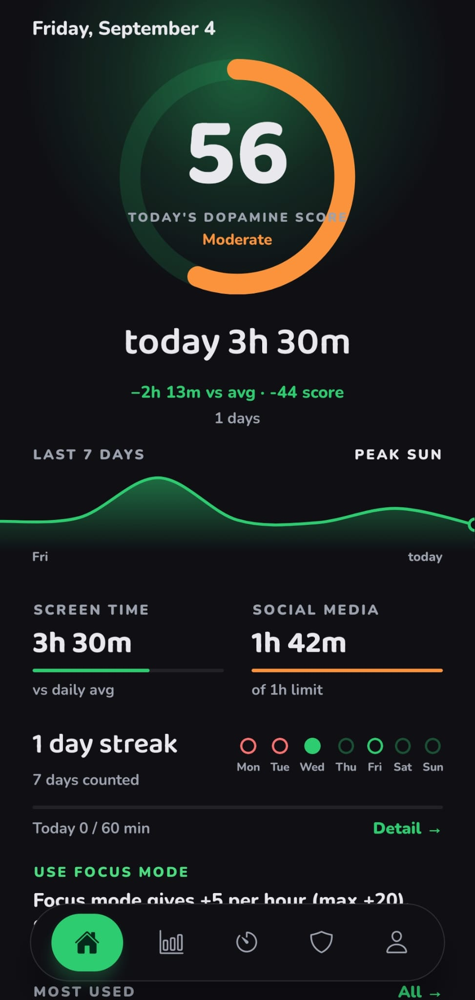
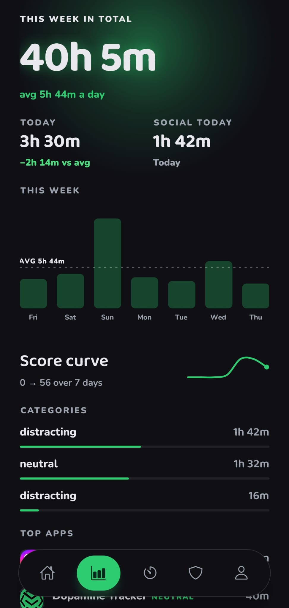
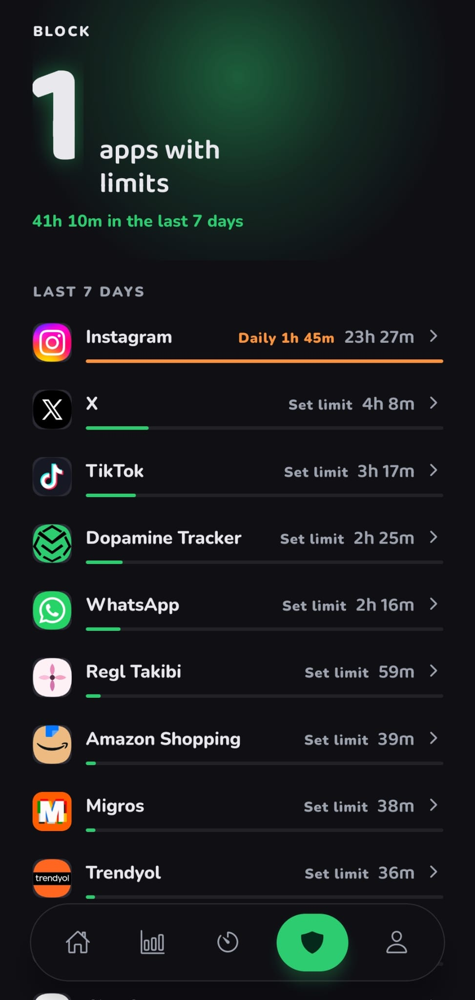
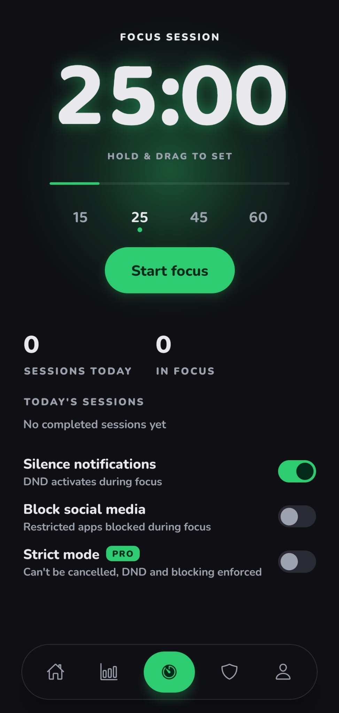
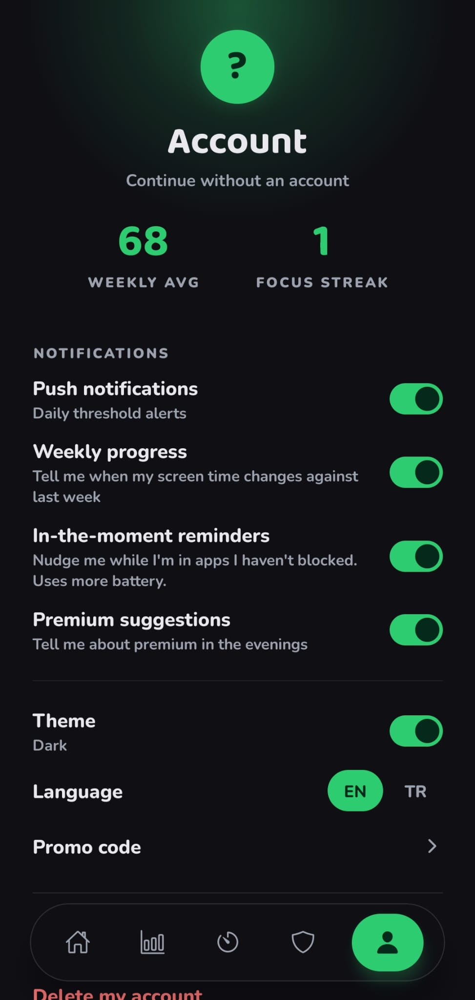

Android · Ücretsiz
Zamanını geri al.
Dopamine Tracker ekran sürenin nereye gittiğini anlamanı ve kontrolü ele almanı sağlar.
Google Play'de ücretsiz. Kart bilgisi istenmez.
Sorun
Hayatının ne kadarı bir ekranda kayboluyor?
Günlük küçük rakamlar. Yıllık büyük rakamlar.


01 · Alışkanlıklarını anla
Zamanının gerçekten nereye gittiğini gör.
Uygulama bazında ekran süresi, 0–100 arası günlük dopamin skoru ve gününü en çok alan uygulamalar. Telefonunda ölçülür, telefonundan çıkmaz.
02 · Sınır koy
Dikkatin. Kuralların.
Uygulama başına günlük limit, seçtiğin günlerde tam gün kapatma ve neden yüklediğini hatırlatan engel ekranı. Engelleme ücretsiz.
03 · İvme kazan
Küçük değişiklikler. Büyük fark.
Sosyal medya için günlük hedef, altında kaldığın her gün büyüyen seri ve bildirimleri susturan odak seansları.

Bugün · en çok kullanılan
Instagram · günlük limit
Gece yarısına kadar engelli
Sosyal medya · son 14 gün
Veri
Uygulamanın içinde bir hafta.
Gerçek bir haftadan gerçek rakamlar: haftalık toplam, günlük ortalama ve bugünün ortalamanın ne kadar altında kaldığı.
Bu hafta
Skor eğrisi · 7 günde 0 → 56
Uygulama
Her şey, bir başparmak uzağında.


Haftalık istatistikler
Uygulama engelleme
Odak seansları
Hedefler ve ilerleme
Nasıl çalışır
Üç adım.
Gerçek rakamı gör
Kullanım erişimi ver, ilk açılışta uygulama bazında gerçek ekran süreni gör.
Limit koy
Seni geri çeken uygulamayı seç, günlük limit ya da kapalı günler belirle. Engel kurmak ücretsiz.
Gece yarısını bekle
Limit dolunca uygulama açılmaz. Erken çıkmak isteyen Pro'ya geçer.
Ücretsiz ve Pro
Engel kurmak herkese ücretsiz. Esneklik Pro'da.
Ücretsiz
₺0
- Uygulama başına günlük limit ve tam gün kapatma
- Engel ekranı ve amaç hatırlatması
- Ekran süresi takibi, dopamin skoru, analiz
- Odak seansları, günlük hedef ve seri
- Engeli gece yarısından önce açma
Pro
₺59,99/ ay · ₺289,99 yıllık
- Ücretsizdeki her şey
- Engeli bugünlük aç veya limiti gevşet, gece yarısını bekleme
- Sıkı odak modu: başlattığın oturum iptal edilemez
- Kırılamaz engel: Pro'dayken bile açılamaz, gün bitince kalkar
İptal etmediğin sürece Google Play tarafından otomatik yenilenir. İstediğin zaman iptal edebilirsin.
Kullanıcılar ne diyor
Kullananlardan.
“Ekran süremi azaltmama çok yardımcı oldu. Uygulamayı kullandığımda yaptığım işe tamamen odaklanabiliyorum; odak modu olması çok iyi bir özellik ve uygulama dizaynı kullanışı çok rahatlaştırıyor.”
“Çok tatlı bir uygulama. Başta ekran süreleri üzerine veri koyması, bilgiler aktarması keyifliydi.”
Sık sorulanlar
Merak edilenler
Uygulama engelleme ücretsiz mi?
Evet. Uygulama başına günlük limit koymak ve seçtiğin günlerde bir uygulamayı tamamen kapatmak herkese ücretsiz. Engel gece yarısına kadar geçerlidir.
Pro ne sağlıyor?
Engeli bugünlük açmak veya limiti gevşetmek, iptal edilemeyen sıkı odak modu ve Pro'dayken bile açılamayan kırılamaz engel.
Ekran süresi verilerim nereye gidiyor?
Uygulama bazındaki kullanım süreleri telefonundan çıkmaz. Hesabınla yalnızca onboarding yanıtların ve abonelik durumun eşitlenir.
Hangi izinler gerekiyor?
Ekran süresini ölçmek için kullanım erişimi; engel ekranını gösterebilmek için diğer uygulamaların üzerinde gösterme izni. Odak seanslarında isteğe bağlı Rahatsız Etmeyin izni.
iPhone sürümü var mı?
Şu anda yalnızca Android. Uygulama engelleme Android'in kullanım erişimi API'sine dayanıyor.
Daha fazla zamana ihtiyacın yok.
Zaten sahip olduğun zaman üzerinde daha fazla kontrole ihtiyacın var.
Dopamine Tracker'ı indir